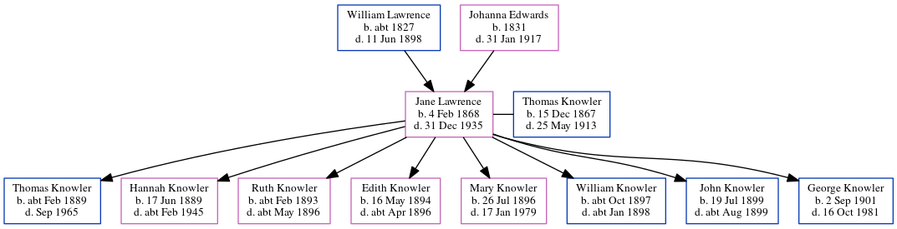

Jane Knowler (née Lawrence) 1868 - 1935
[ Home ] | [ Calendar ] | [ Surnames Index ] | [ Errors ] | [ Family History ]The child of William Lawrence (a harbour labourer) and Johanna Edwards, Jane Lawrence, the great-great-aunt of Nigel Horne, was born in Ramsgate, Kent, England on 4 Feb 18681,2,3,4,5,6 and married Thomas Knowler (an agricultural labourer with whom she had 8 children: Thomas William, Hannah Mary, Ruth Adelaide, Edith May, Mary Elizabeth, William John, John and George Thomas) at Ebenezer Chapel, Meeting Street in Ramsgate on 29 Jul 18888 (Ebenezer Chapel).
During her life, she was living at Rear of Southwood Lodge, St Lawrence, Thanet, Kent, England on 2 Apr 18719; in Staple, Kent, England on 5 Apr 18912; in Woodnesborough, Kent, England on 31 Mar 19013; and at Shingleton Cottages, Eastry, Kent on 2 Apr 19114.
She died on 31 Dec 1935 in Hastingleigh, Ashford, Kent6,7.
Parents
- William was born c. 1827
- Johanna Brooker was born in 1831
Children
- Thomas William was born c. Feb 1889
- Hannah Mary was born on 17 Jun 1889
- Ruth Adelaide was born c. Feb 1893
- Edith May was born on 16 May 1894
- Mary Elizabeth was born on 26 Jul 1896
- William John was born c. Oct 1897
- John was born on 19 Jul 1899
- George Thomas was born on 2 Sept 1901
Citations
- 1871 England Census Online publication - Provo, UT, USA: The Generations Network, Inc., 2004.Original data - Census Returns of England and Wales, 1871. Kew, Surrey, England: The National Archives of the UK (TNA): Public Record Office (PRO), 1871. Data imaged from the National
- 1891 England Census Online publication - Provo, UT, USA: The Generations Network, Inc., 2005.Original data - Census Returns of England and Wales, 1891. Kew, Surrey, England: The National Archives of the UK (TNA): Public Record Office (PRO), 1891. Data imaged from The National (Relation to Head of House: Wife)
- 1901 England Census Online publication - Provo, UT, USA: The Generations Network, Inc., 2005.Original data - Census Returns of England and Wales, 1901. Kew, Surrey, England: The National Archives of the UK (TNA): Public Record Office (PRO), 1901. Data imaged from the National (Relation to Head of House: Wife)
- 1911 England Census Online publication - Provo, UT, USA: Ancestry.com Operations, Inc., 2011.Original data - Census Returns of England and Wales, 1911. Kew, Surrey, England: The National Archives of the UK (TNA), 1911. Data imaged from the National Archives, London, England. (Age in 1911: 44; Marital Status: Married; Relation to Head: Wife)
- England & Wales births 1837-2006 - Findmypast
- England & Wales, Death Index: 1984-2005 Online publication - Provo, UT, USA: The Generations Network, Inc., 2007.Original data - General Register Office. England and Wales Civil Registration Indexes. London, England: General Register Office. © Crown copyright. Published by permission of the Cont
- England & Wales deaths 1837-2007 - Findmypast
- England & Wales, FreeBMD Marriage Index: 1837-1915 Online publication - Provo, UT, USA: The Generations Network, Inc., 2006.Original data - General Register Office. England and Wales Civil Registration Indexes. London, England: General Register Office. © Crown copyright. Published by permission of the Cont
- 1871 England, Wales & Scotland Census - Findmypast (was age 3 and the daughter of the head of the household)
Media
England & Wales births 1837-2006 - BMD/B/1868/1/AZ/000418/188
1871 England, Wales & Scotland Census Transcription - GBC-1871-0014304082
England & Wales deaths 1837-2007 - BMD/D/1936/1/AZ/000658/033
Family Tree
Map
Generated by ged2site. Last updated on Jul 3, 2024
Known Issues
Census information missing between Census UK 1871 and 1891 England Census